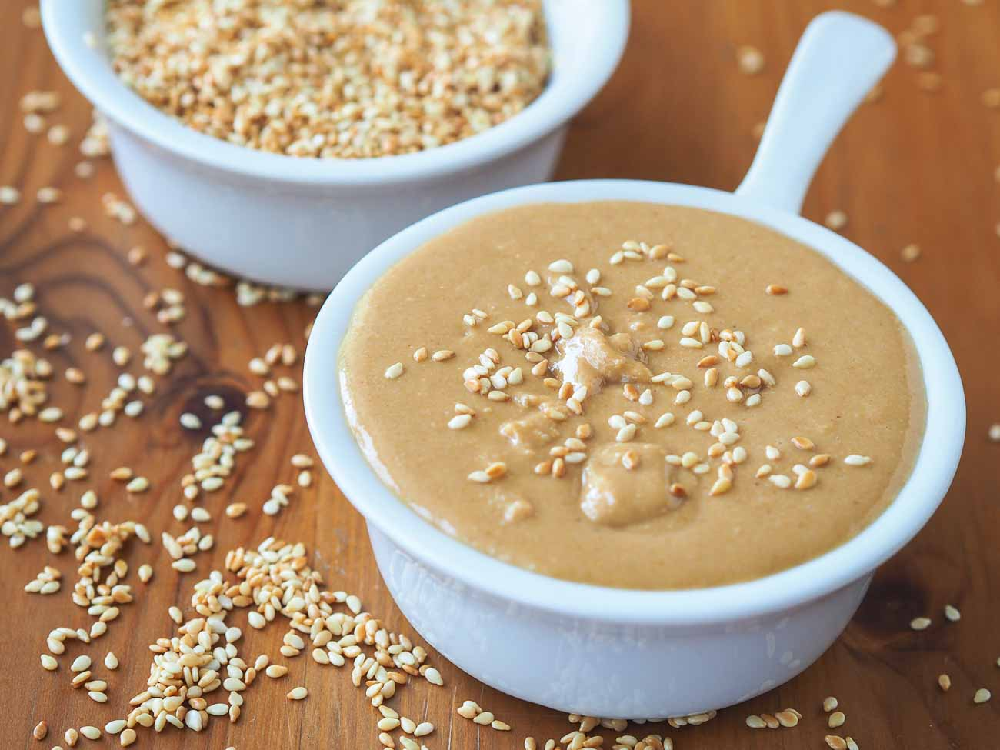

Tahini

Description:
Tahini have a unique, nutty and bitter flavour, and can be added to a variety of foods to add flavouring.
It is also a key ingredient of Hummus and if often served with Falafel in the form of Tahini sauce.
Ingredients:
Directions:
- Roast sesame seeds until light brown
- Let cool
- In food processor or grinder, grind them to a very fine powder
- Transfer to another container
- Fill container with oil to cover all the ground sesame seeds.
- Use for Hummus or to make Tahini sauce
- Enjoy!
Back to all recipes